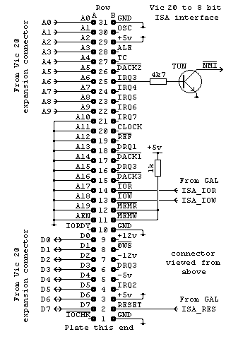
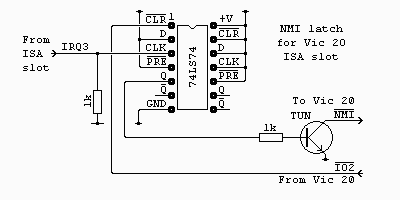

|
|
Vic 20 ISA slot by Lee Davison |
|
HardwareI wanted to connect an 8 bit ISA slot, only to access the IO adresse range, to my Vic 20. The main reason being to connect a network card and put the Vic on my home network. While I was about it I added a ROM/RAM expansion as well.
A look round the net found lots of people have had this idea before but there was scant evidence that anyone had actually implemented it. So some thought, and lots of routing around in the parts box, produced the following.
The circuit I came up with appears to the right. As only one card initially was to be used, and the interrupt used by that card could be changed by the software, it was decided to hardwire the interrupt to IRQ3. This is made into an open collector drive, and converted to the correct sense for the 6502, by a single transistor. This transistor is not critical and nearly any NPN small signal switching type, e.g. 2SC945, will do.
As I'm only interested in the I/O area, and only the lower 1k of that is needed for non 'Plug-n-Play' accesses, making use of one of the Vic 1k RAM areas seemed like the ideal solution. However generating these signals was not as easy as it first appeared. It was discovered that the VIC chip generates reads to all of the eight 1k blocks at some time or other and, with many PC cards being read sequence sensetive, this would not do. Using a 1k RAM block was then abandoned and it was decided to use one of the Vic 1k IO areas. This initially failed because of the difference between VRW, which is used in expansion cartridges to access RAM and ROM, and CRW which is the raw read/write line from the CPU. When VRW was used reads to the selected area were ok but writes would generate two spurious, narrow read pulses, one either side of the write enable. This is caused by the write portion of VRW being shorter than the phase two active cycle.
So that fixed it right? Wrong. While everything looked ok the 3Com card being used flatly refused to talk to the Vic. This turned out to be a subtle detail of ISA I/O timing which wasn't immediately obvious. See the details here.
Most of the connections are direct from the Vic expansion connector and only three need to be generated. These are RESET, IO READ and IO WRITE and are generated by a GAL used for nearly all the glue logic on the card. The equations for this GAL are in isa.pld and can be compiled with WinCUPL. The fuse file, isa.jed and the compiler listing, isa.txt are also included.
The circuit as presented so far works a treat under most situations. However, while developing the code for the network card the Vic would miss an interrupt and then stop responding to interrupts from the card. This would sometimes happen immediately the machine was reset and sometimes after a wait of up to a few hours, the sure way to trigger it was to flood ping the Vic from more than one machine.
After discounting other causes the remaining possibility was that as one interrupt was serviced the interrupt would clear and would then be followed immediately by another interrupt. Though the 6502 NMI interrupt is described as edge triggered it is actually sampled on each Ø2 trailing edge and needs to be seen to be idle on one cycle and active on the next to trigger. The idle time of the interrupt from the card was too short for this to occur reliably so eventually a change would be missed.
 The solution is to use a true edge triggered latch to register the interrupt and then clear it under software control. This was done by using a 74LS74 D type latch soldered onto the underside of the board. Pretty it isn't but it does work, the proof of this is to bypass it while running code that is otherwire reliable, the Vic soon stops responding.
So now when an interrupt occurs the latch is set and the NMI line pulled low. One of the first things the NMI routine does is to clear the latch, this means that the NMI line is released long before the next interrupt is generated. If I ever revise this hardware I'll use a bigger GAL and this circuit can be accomodated in that.
SoftwareThe card slot was mounted on the Vic expansion card by doing the following. Two 0.1" strips of 0.1" stripboard, each with 31 strips, were cut and these were glued either side of the expansion card far edge with a quick setting epoxy resin adhesive. When the adhesive had set a scavenged ISA card edge socket was push fitted over the strips and the end pins tacked in place with solder. Once the allignment was correct the rest of the pins were soldered to the strips and tinned copper wire was used to make the address, data and power connections between the card slot and the Vic expansion card.
There is no specific software needed to drive the ISA slot, it simply appears as the area of memory from $9C00 to $9FFF, this translates into the IO address range $0000 to $03FF so most non Plug-n-Play capable cards should work.
A description of the project to use a network card with this interface, including the software, can be found here.
| Last page update: 29th February, 2004. | e-mail me
 |